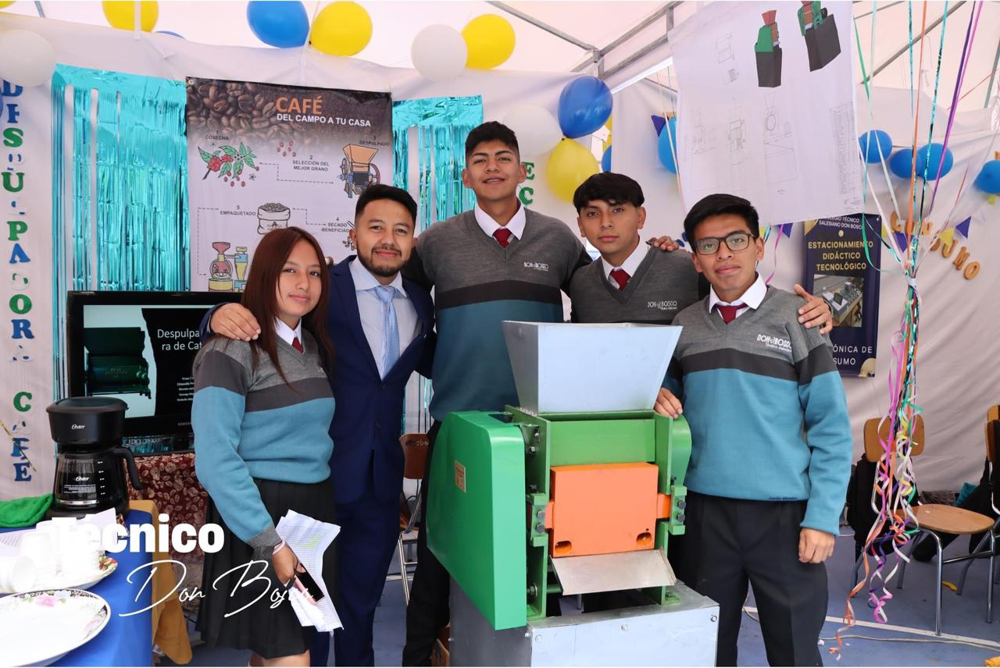

Este proyecto fue mi trabajo de graduación del bachillerato técnico en el Colegio Técnico Don Bosco. Junto a mi grupo de trabajo desarrollamos una máquina despulpadora de café enfocada en apoyar a agricultores y campesinos.
El objetivo del proyecto fue facilitar el proceso de separación de la pulpa del café, ayudando a mejorar el trabajo de productores de zonas agrícolas como Loja y Catamayo.
El desarrollo completo del proyecto tomó aproximadamente un año y medio, desde el diseño inicial hasta la construcción de la máquina.
